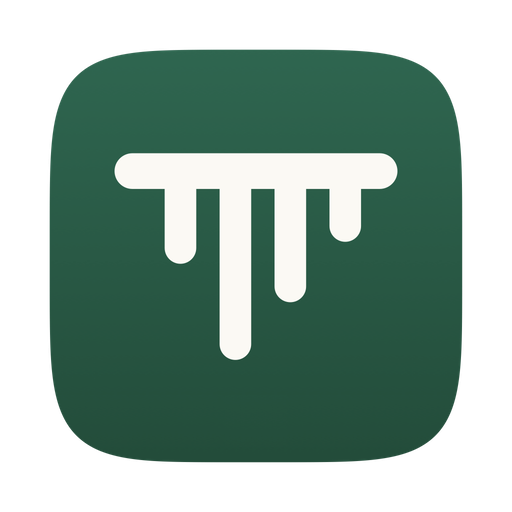

Dictation clean-up on Mac
Dictation that drops the ums, on your Mac.
Hold fn, talk the way you talk, and let go. Lipik types what you meant: no um or uh, and when you change your mind mid-sentence, only the new version. It runs on your Mac, so it works offline.
Free and open source, for Macs with Apple silicon.
What you say, and what Lipik types
These come from Lipik's own test set: made-up lines read aloud by macOS voices, then run through Lipik 0.1.12 with clean-up on. The left column is what the speech model heard; the right is what Lipik typed.
| App | Heard | Typed |
|---|---|---|
| Slack | Hey can we, UM, move the call to 4 no 5 | Hey, can we move the call to 5? |
| Slack | Send the report to Zubin. Sorry, I meant Tavish. | Send the report to Tavish. |
| Slack | Let's order 20 units. Scratch that. Let's order 50 units | Let's order 50 units. |
| Messages | I I think the the numbers look fine to me, honestly. | I think the numbers look fine to me, honestly. |
| Notes | The options are red comma blue comma or green period. | The options are red, blue, or green. |
| Notes | Agenda Bullet Budget Review Bullet Hiring Plan Bullet Q4 Roadmap |
Agenda: - Budget Review - Hiring Plan - Q4 Roadmap |
It doesn't catch everything. In the same test, "Hum okay so basically the client wants the logo bigger" kept its "Hum" and its "basically". Read what it typed before you send it.
How the clean-up works
Lipik turns your speech into text with Parakeet, an English speech model that runs on your Mac. Then two steps tidy the text:
- built-in rules fix um, spoken punctuation ("comma", "new line", "question mark"), numbers, times and email addresses. They need no download.
- a clean-up model removes filler words and repeated words, keeps only the corrected version when you say "no", "sorry, I meant" or "scratch that", and formats spoken lists. It runs on your Mac through llama.cpp, with no other app needed. One button in setup downloads it from Hugging Face: Qwen3 8B (5 GB) on Macs with 16 GB of memory or more, or Qwen3 4B Instruct (2.5 GB) on smaller Macs. It needs macOS 13.3 or later; older Macs can use the free Ollama app instead.
You can set the tone for each kind of app, for example casual in Slack and more formal in Mail. If you'd rather use a cloud model, you can add your own API key; only then is the text, not the recording, sent to that provider.
Also in Lipik
- a Dictionary for names it gets wrong, and snippets
- hands-free dictation with fn + Space
- meeting notes with no bot joining the call
- Hinglish voice typing (beta)
Every feature is free, with no account and no word limit. What Lipik sends over the internet is listed on the free dictation page.
Questions
What does the clean-up change?
It removes filler words like um and uh, repeated words, and the first version when you correct yourself ("Tuesday, actually no, Wednesday" becomes "Wednesday"). It also turns spoken punctuation into punctuation, writes numbers and times as digits, and formats spoken lists. You can set a tone per kind of app, for example casual in chat and more formal in email. Read the text before you send it: the clean-up model can still get a line wrong.
Does my text leave my Mac?
No. Built-in clean-up runs on your Mac. Only if you add your own API key for a cloud model is the text, not the recording, sent to that provider.
Do I need to download anything for clean-up?
For the full clean-up, yes: one button in setup downloads the clean-up model from Hugging Face, Qwen3 8B (5 GB) on Macs with 16 GB of memory or more, or Qwen3 4B Instruct (2.5 GB) on smaller Macs. It needs macOS 13.3 or later. Without it, Lipik's built-in rules still fix um, spoken punctuation, numbers, times and emails.
Can I turn clean-up off?
Yes. Clean-up is optional. With it off, Lipik types what it heard, with only the built-in rules applied.
Which Macs does it run on?
Macs with Apple silicon (M1 or later). There is no Windows version yet.

Get Lipik for Mac.
Free, for Macs with Apple silicon. Open the download, drag Lipik into Applications, and hold fn to start.
curl -fsSL
https://lipik.pages.dev/install.sh | sh
Pasting the line above into Terminal installs Lipik with no security warning. If you use the download instead, macOS asks you to confirm the first time: go to System Settings, then Privacy & Security, and click Open Anyway. Install help